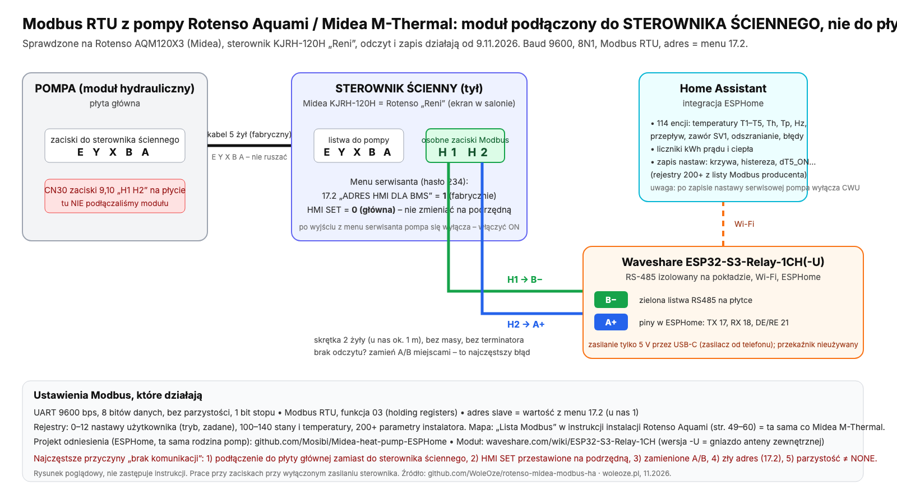

← pompa.woleoze.pl · Pobierz PDFDrukuj
Karta dla instalatora: moduł Modbus do pompy ciepła
Pompa w Home Assistant · płyta Midea M-Thermal (Rotenso Aquami, Kaisai Arctic, Galmet Prima i inne) · pełna instrukcja ze zdjęciami: kod QR obok.
pompa.woleoze.pl/instrukcja
1. Czy pompa pasuje
- Czarno-biały sterownik ścienny Midea KJRH-120x (Rotenso „Reni”) z zaciskami H1/H2.
- W menu serwisanta (hasło zwykle 234) jest pozycja 17.2 „ADRES HMI DLA BMS”.
- Rotenso Windmi i Heatmi: inne złącze, patrz punkt 5.
- Nie pasują: Rotenso Airmi, Kaisai KHX, Thermatec, Kospel, Hewalex, Galmet Airmax3.
2. Ustawienia na sterowniku
- 17.2 = 1 (fabrycznie). To adres Modbus pompy.
- 17.1 HMI SET = GŁÓWNA (czasem MASTER albo 0). Nie zmieniaj na podrzędną.
- Po wyjściu z menu serwisanta pompa się wyłącza: włącz ją przyciskiem i sprawdź grzanie i CWU.

3. Podłączenie (ok. 10 min)
- Wyłącz pompę na panelu i zdejmij sterownik ze ściany.
- H2 → A+, H1 → B− modułu. Dwie żyły (np. para ze skrętki), bez masy, bez terminatora.
- Istniejących przewodów sterownika (E Y X B A) nie odpinasz.
- Brak odczytów: najpierw zamień A i B.
Nie podłączaj się do H1/H2 na płycie głównej jednostki (CN30). To magistrala panelu, nie Modbus.
4. Zasilanie i sieć
- Moduł Wi-Fi: tylko 5 V przez USB-C (ładowarka od telefonu, min. 1 A). Sieć klient ustawia telefonem: Wi-Fi „pompa-setup”, hasło „pompa-setup”, strona 192.168.4.1.
- Bramka LAN: zasilacz 5 V z zestawu i kabel sieciowy do routera. Nic nie ustawiasz.
- Nigdy nie podawaj zasilania na H1/H2.
5. Rotenso Windmi i Heatmi (płyta jednostki wewnętrznej)
230/400 V. Przed zdjęciem obudowy odetnij zasilanie w rozdzielnicy.
| Pompa | Złącze | Adres | Nie tutaj |
|---|
| Windmi (ORIS) | CN67: A→A+, B→B−, ekran→E | 11 | CN63 (H1/H2) |
| Heatmi | J2: A2, B2 (brak odczytu: zamień) | 16 | A1/B1 |
6. Sprawdzenie i nastawy
- Home Assistant → dodatek „Pompa w HA” → diagnostyka: ✓ zielone = działa, ✗ czerwone = wskazówka, co poprawić.
- Modbus RTU, 9600 bps, 8N1, funkcja 03, adres = 17.2.
- Zmiana nastaw z Home Assistanta działa jak zmiana w menu serwisanta. Po zapisie nastawy serwisowej pompa wyłącza CWU; karta Pro włącza ją z powrotem.
Pomoc wyłącznie mailowo: pompa@woleoze.pl (z raportem z dodatku: przycisk „Wyślij raport”). Bez połączeń zdalnych i bez haseł. WOLEOZE.PL Sp. z o.o., ul. Biasowicka 8E, 44-264 Jankowice, KRS 0001048206, NIP 6423246378. Stan 11.2026.